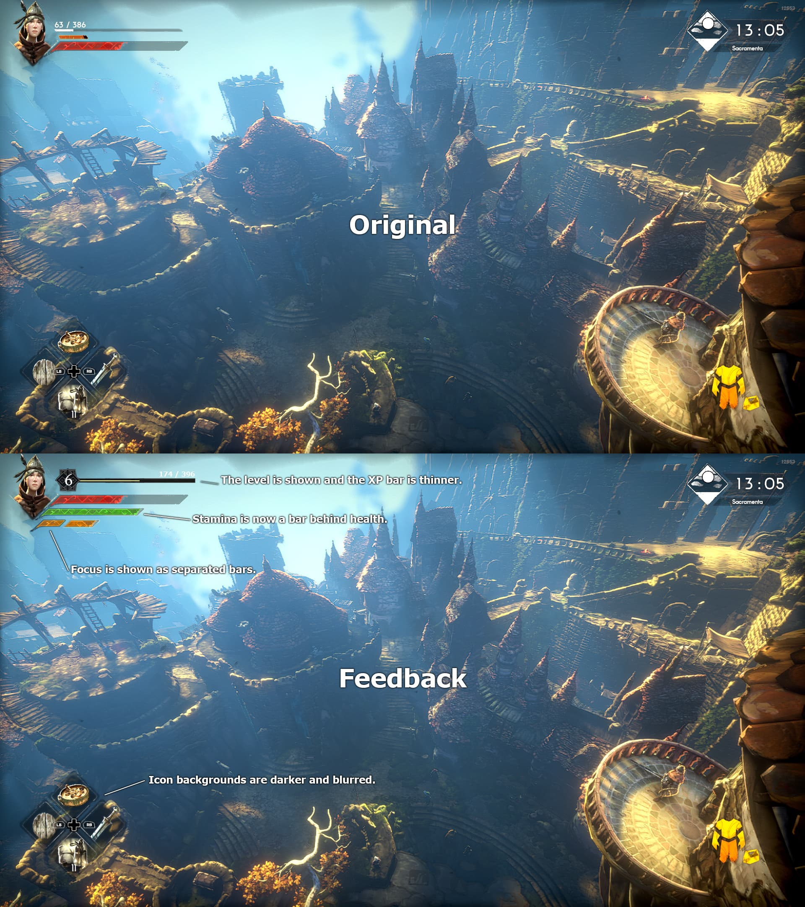
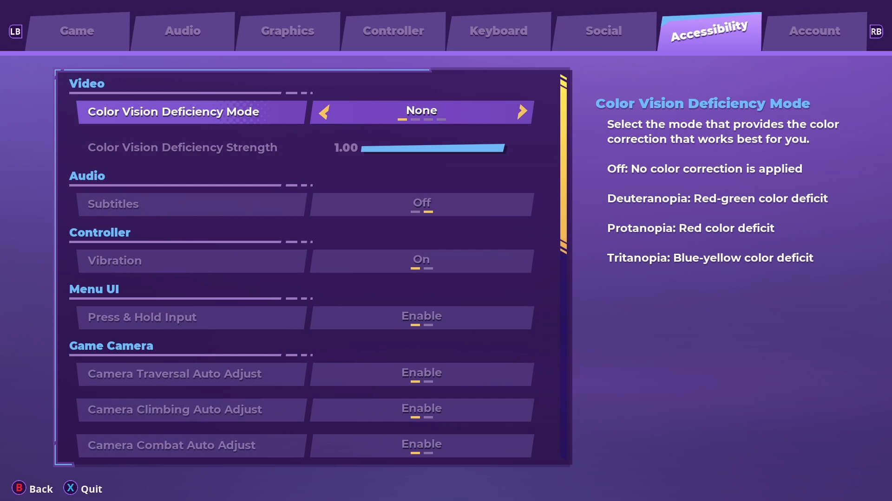
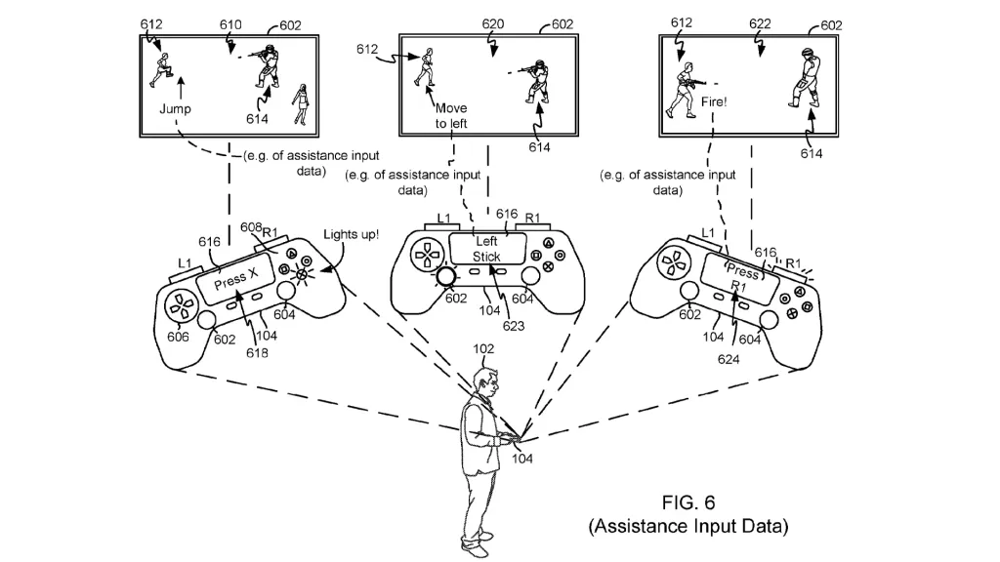

In games, the line between helping the player and holding their hand too much is extremely thin. The better question may not be whether games became dumber, but whether design became better at explaining systems that used to be confusing by accident.

View full imageAbout this adaptation
This article is an English editorial adaptation based on the topic of an O Meio Noob video essay. It is not a literal transcript. The goal is to test how video essays from the channel can become portfolio-friendly written content for an international audience.
Did games become easier, or did they become clearer?
There is a common nostalgic argument in gaming communities: older games were harder, smarter and more demanding, while modern games explain too much. There is some truth in that feeling. Many older games required more patience, memorization and experimentation.
But difficulty and lack of clarity are not the same thing. Sometimes a game was not difficult because it had deeper design. It was difficult because it failed to communicate its rules, hid important information or punished the player for not guessing what the system expected.
When a modern game highlights an objective, explains a mechanic, offers a map marker or introduces a tutorial gradually, it does not automatically mean the game is treating the player as incapable. It may simply mean the design is taking responsibility for communicating the experience better.

View full imageGood friction versus bad friction
In Game UX, friction is not automatically a problem. Friction can create tension, learning, satisfaction and mastery. A difficult boss, a dangerous route, a limited inventory or a demanding combat system can make the experience more memorable.
The problem is friction that does not create meaning. If the player fails because the interface hid essential information, the objective was unclear or the feedback did not explain what happened, the difficulty stops feeling fair.
The best question is not simply whether something is easy or hard. The better question is: does the player understand why they failed and can they imagine how to improve? If the answer is yes, the friction is probably working in favor of the experience.
The myth of pure discovery
Many players value discovery, and for good reason. Finding a route, understanding a system alone or solving a problem without explicit help can be incredibly satisfying.
But discovery does not need to mean abandonment. A game can guide without spoiling. It can suggest without solving. It can offer clues without turning everything into a checklist.
When guidance is excessive, the player may feel like they are only following markers. When guidance is insufficient, the player may feel lost for reasons that have nothing to do with skill. The sweet spot is somewhere between autonomy and support.
Clarity
The player understands the goal, the rules and the system feedback.
Agency
The player still feels responsible for decisions, discovery and problem-solving.
Mastery
The experience allows the player to learn, improve and feel real progress.
When design improves, it often becomes invisible
A good tutorial often goes unnoticed. A good interface feels obvious. Good feedback helps the player understand what happened without stopping the flow of play. This can create the impression that the game became simpler, when in reality the design became more careful.
Modern games also speak to broader and more diverse audiences. Accessibility options, difficulty settings, captions, maps, indicators and assistive systems do not exist only to make games easier. They expand who can participate in the experience.
This does not mean every game should be heavily guided. A soulslike, an immersive sim, a survival horror and a narrative adventure should not solve guidance in the same way. The important thing is that the experience is coherent with its design intention.

View full imageSo, did games get dumber?
Some games do overdo it. Too many markers, constant interruptions and systems that explain everything too early can weaken mystery, autonomy and the sense of accomplishment.
But saying that all UX improvements made games dumber oversimplifies the discussion. Many design patterns that now feel obvious exist because designers learned how to reduce unnecessary confusion and make systems more legible.
The best game design does not remove difficulty. It clarifies where the right difficulty lives. It does not play the game for the player. It creates the conditions for the player to understand, choose, fail, learn and master the experience.
takeaway
Games do not need to be confusing to be deep.
Original video
The video below is from O Meio Noob and is spoken in Brazilian Portuguese. YouTube may offer automatic captions or automatic dubbing depending on the viewer's region and platform settings.